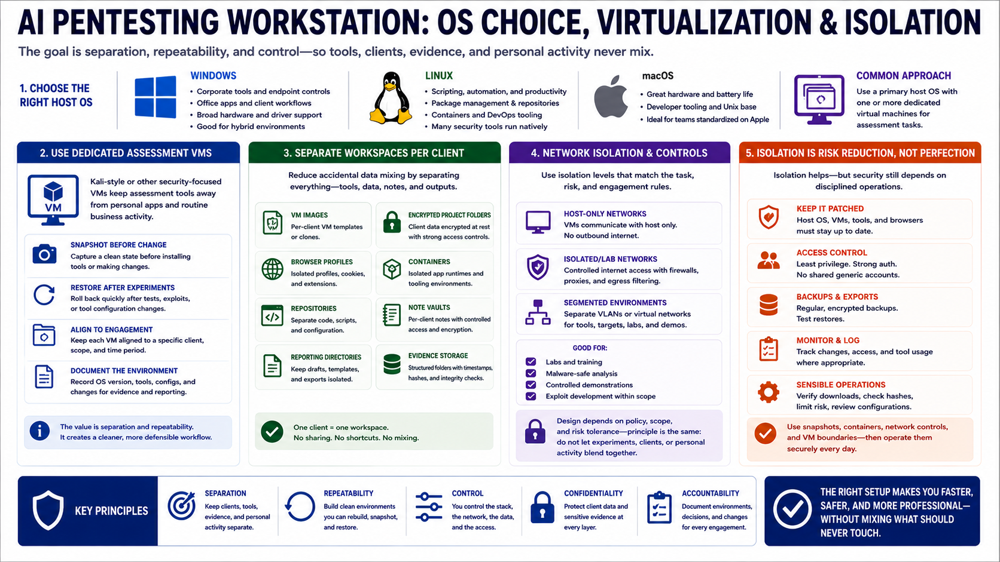

Operating System and Isolation Strategy
Connecting to LMS... Progress: in progress

Narration
The operating system choice should support the way the assessor works. Windows may be useful when corporate tools, endpoint controls, office applications, and certain client workflows are required. Linux may be preferred for scripting, package management, containers, and many security tools. macOS may fit teams already standardized on Apple hardware. Many assessors use a primary host operating system with one or more dedicated virtual machines for assessment tasks.
Security-focused virtual machines, including Kali-style environments at a high level, can help keep assessment tools away from personal applications and routine business activity. The value is separation and repeatability. A VM can be snapshotted before a tool change, restored after an experiment, and kept aligned to a particular engagement. It also gives the team a cleaner way to document what environment was used.
Separate workspaces for clients reduce accidental data mixing. That can mean separate VM images, encrypted project folders, browser profiles, containers, repositories, note vaults, and reporting directories. Host-only or isolated networks may be appropriate for labs, malware-safe analysis environments, or controlled demonstrations. The exact design depends on policy and scope, but the principle is consistent: do not let experiments, clients, and personal activity blend together.
Isolation is not a guarantee of perfect security. It is a risk-reduction strategy. Snapshots, containers, network controls, and VM boundaries help, but they still require patching, access control, backups, and sensible operations. The workstation should make it easy to separate tools, evidence, models, and client material while still supporting efficient work.